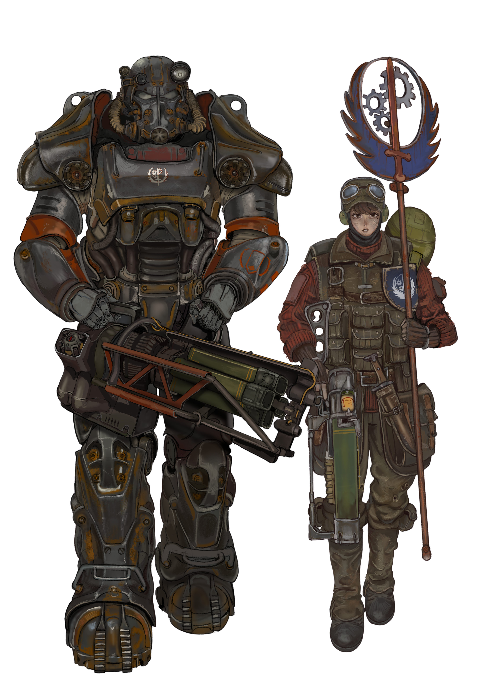

A partir de la Escena 8, la historia se bifurca por completo dependiendo de la facción con la que decidas alianzar tus pasos, conduciéndote directamente hacia el control del Silo Omega (la red de misiles de pre-guerra):
-> Hermandad de Acero (Camino al Final Bueno): Buscan restaurar el orden y proteger a los inocentes. Al llegar al silo, introduces los códigos de desarmado global para eliminar la amenaza atómica de los cielos. Desenlace: El Héroe del Yermo.
->Legión de César (Camino al Final Malo): Un ejército imperialista basado en la conquista y el terror. Configuras el Silo Omega para lanzar una ofensiva nuclear devastadora sobre los asentamientos libres. Desenlace: La Gran Catástrofe.
->Mercenarios Independientes (Camino al Final Neutral): Sin lealtades políticas, solo buscan el beneficio propio. Podrás elegir entre robar los códigos nucleares para venderlos en el mercado negro o saquear la armería tecnológica antes de huir. Desenlace: El Errante Solitario.
